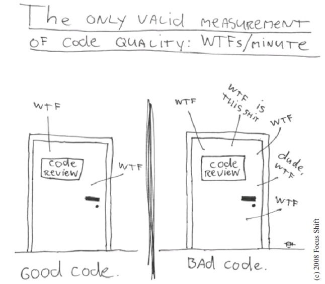
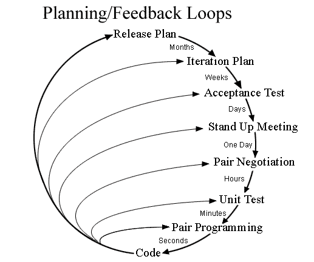

Ingénierie Logicielle
Agile
Antoine Vernois
Agile Software Craftsman
Software Anarchist
blog : https://blog.crafting-labs.fr
twitter : @avernois
#ISpeakForFood
et vous ?
post-it
Vous attendez quoi de cette formation ?
tour de table
- qui êtes vous ?
- qu'est ce que vous faites ?
- qu'est ce que vous aimez ?
- qu'est ce que vous aimez moins ?
- votre expérience avec les tests et le tdd ?
détails pratiques
- horaires
- repas
- pauses
Clean Code, Tests
et TDD
Agilité et Qualité
Une attention continue à l'excellence technique et au bon design améliore l'agilité.
Manifeste Agile, 9è principe
Pourquoi la qualité ?
Pourquoi la qualité ?
Répondre au changement plutôt que la poursuite d'un planManifeste agile, 4è valeur
C'est quoi la qualité ?
Quotes
Any fool can write code that a computer can understand. Good programmers write code that human can understand.Martin Fowler
Always code as if the guy who ends up maintaining your code will be a violent psychopath who knows where you live.Martin Golding
...if you're afraid to change something it is clearly poorly designed.Martin Fowler
C'est quoi la qualité ?
Un logiciel est de bonne qualité si le coût d'ajout d'une fonctionnalité est constant dans le temps.Jérôme Avoustin
C'est quoi un code propre ?
Clean code is not about beautifullness,
it's about goodness.Rebecca Wirfs-Brock
- testé !
- sans duplication
- révèle son intention
- facile à lire
B. Stroustrup, R. Jeffries, K. Beck, M. Feathers, W. Cunningham, ...
4 règles du design simple
- les tests passent
- clair, expressif et consistent
- sans duplication
- méthodes, classes, modules minimaux
Extreme Programming, Kent Beck
et voilà notre programme
les tests passent
Tests
Ils vous donnent confiance pour modifier le code.
- un test, un assert
- lisible
- ils documentent votre code
Un test doit vous raconter une histoire.
Les tests sont des citoyens de première classe.
3 types de tests
fonctionnels
d'intégration
unitaires
les tests fonctionnels
Souvent :- les plus nombreux
- issus des specs
- écrits indépendamment des dev
- passés à la fin, à la main
Généralement, sources de problèmes et d'incompréhension
les tests fonctionnels
et chez vous ?les tests fonctionnels
Dans une approche agile :- écrits conjointement
- basés sur des exemples
- deviennent la spécification
- disponible dès le début
- automatisés
Généralement, sources de collaboration
Spécification par l'exemple
1 exemple = 1 test
écrit avant, il guide le développement
spécification exécutable
pourquoi automatiser ?
pourquoi automatiser ?
feedback continu
non-régression permanente
plus fiable qu'un test manuel
permet aux testeurs d'utiliser au mieux leurs compétences
augmente la confiance
tests unitaires
Ma définition
- Test unitaire
un test qui vérifie un comportement d'un morceau de code isolé du reste.
Pourquoi ?
- parce que c'est à la mode !?
- les tests sont une preuve que votre code fait ce qu'il est supposé faire.
- au plus tôt on trouve le problème, le moins cher coûte sa résolution.
- ils donnent confiance lorsqu'on fait des modifications.
- rendre un code testable (et testé) conduit souvent à un meilleur design.
- les tests expliquent ce que fait votre code.
Qualité d'un test unitaire
- Fast
- Isolated
- Repeatable
- Self-validating
- Timely
Test After.
Les tests après.
bowling time !
(faux) problèmes
C'est bon ça marche, pas besoin de test.
Je suis à la bourre, et j'ai du fonctionnel plus important. J'écrirai les tests plus tard.
Les tests c'est pour ceux qui savent pas coder.

(gros) problèmes
- on peut avoir écrit du code qui n'est pas testable.
- on ne voit jamais les tests échouer
- souvent, les tests sont écrits en étudiant le code.
Test First
Les tests d'abord.
Les tests d'abord.
- Réfléchir à ce que je veux faire.
- Écrire les tests correspondants.
- Écrire le code qui les fera passer.
Enjoy.
l'intérêt
- au moins, on est sur que les tests seront écrits
- le code sera forcemment testable
bowling time !
instant confession
problèmes
- les tests sont rouges pendant longtemps
- ça impose un big design upfront
- erreur et oubli obligent à presque tout refaire
- le passage du rouge au vert n'est pas toujours net
TDD : Test Driven Developpement
Développement guidé par les tests
Développement guidé par les tests
- Écrire exactement un test qui échoue.
- Le faire passer.
- Nettoyer.
Répéter.
Test Driven Developpement
- Red
- Green
- Refactor
That's all !
Test Driven Developpement
variation git
- Red
- Green
- git commit
- Refactor
- git commit
bowling time !
2 écoles de TDD
Classical / Inside Out
London style / mockist / Outside In
design émergent
First make it works, then make it rightLe code n'est ajouté que pour répondre à la nécessité de faire passer un test.Kent Beck
Quick Design session
entre developpeurs
quelques minutes
aussi souvent que nécessaire
au tableau
CRC : Class, Responsability, Collaboration
Simplicité
YAGNI : You aren't gonna need it
les décisions sont prises au dernier moment responsable
ne pas confondre simplicité et facilité
XP feedback loops
et les méthodes privées ?
les autres xDD
- ATDD
Acceptance Test Driven Developpement
- BDD
Behaviour Driven Developpement
BDD
Smells

Smells
- Singleton
- Tight coupling
- Untestable
- Premature Optimisation
- Indescriptive naming
- Duplication
Good practices

4 règles du design simple
- les tests passent
- clair, expressif et consistent
- sans duplication
- méthodes, classes, modules minimaux
Extreme Programming, Kent Beck
Un bon nommage
- le nommage doit révéler l'intention
- alt+shift+r est votre ami (eclipse)
Let's see for real.
Duplication
DRY : Don't repeat yourself !
Abstraction
1 niveau par méthod
Abstraction
Demeter's Law
Don't talk to stranger
a.getB().getC().doThings(); // NO !
class A {
B b;
doThings() {
b.doThings();
}
...
}
class B {
C c;
doThings() {
c.doThings();
}
...
}
a.doThings();
Couplage fort
C'est mal !
- Tests
- Souplesse
- Réutilisation
- ...
Injection de dépendance
public class A {
private B b;
public void execute(int i) {
b = new B();
C c = new C();
if (i <= 3) {
b.executeB();
} else {
c.executeC();
}
}
}
public void main(){
A a = new A();
a.execute();
}
public class A {
private B b;
public A(B b) { this.b = b; }
public void execute(int i, C c) {
if (i <= 3) {
b.executeB();
} else {
c.executeC();
}
}
}
public void main(){
B b = new B();
A a = new A(b);
a.execute(3, new C());
}
Méthodes
Courtes
Commentaires
Comments are always failureUncle Bob
Don't comment bad code. Rewrite it.Brian W. Kernighan, P.J. Plaugher
Commentaires dans la vraie vie
/*
* A comment to please checkstyle
*/
/*
* Set the port
*
* @params port
*/
public void setPort(Port port) {this.port=port}
...
} /* end for */
dao.flush();
default :
break;
} /* end switch */
} /* end if */
} /* end if */
} catch ...
Commentaires : l'exception
expliquer le pourquoi !
Commentaires
Les tests me disent Quoi
Le code me dit Comment
Les commentaires me disent Pourquoi
SOLID


Gestion des exceptions
Fail Fast
- Do not check exception
- Manage exception as high as possible
- Never ever return null !
never ever return null
Quelques conseils de plus
Ne pensez pas héritage, pensez polymorphisme
Ne pensez pas if/switch, pensez polymorphisme
évitez les singletons
Legacy code
Intégration continue
Pair Programming
Propriété collective
Read list


Quotes
Any fool can write code that a computer can understand. Good programmers write code that human can understand.Martin Fowler
Always code as if the guy who ends up maintaining your code will be a violent psychopath who knows where you live.Martin Golding
...if you're afraid to change something it is clearly poorly designed.Martin Fowler